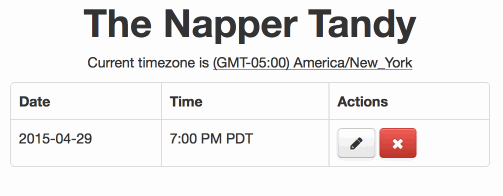

Time Zones and datetime_select
The Problem
datetime_select and time_zone_select don't work together. If you use both of them and Time.zone doesn't match the selected timezone, the user will unwittingly set the wrong time:

The Fix
Use the selected timezone when setting the timestamp:
Time.use_zone(check_in_params[:timezone]) do
@check_in.attributes = check_in_params
end
Example Feature
- Users can check-in to places like foursquare
- Users can backdate check-ins in case they forgot
- Users view check-in timestamps in the check-in timezone
class CheckIn < ActiveRecord::Base
# convert the timestamp into the correct timezone
def timestamp
super.in_time_zone(timezone) if super
end
end
class CheckInsController < ApplicationController
before_action :load_check_in
def update
Time.use_zone(check_in_params[:timezone]) do
@check_in.attributes = check_in_params
end
if @check_in.save
redirect_to action: 'show'
else
render action: 'edit'
end
end
private
def check_in_params
params.require(:check_in).permit(:timestamp, :timezone)
end
def load_check_in
@check_in = current_user.check_ins.find(params[:id])
end
end
<!-- edit.html.erb -->
<%= form_for @check_in do |f| %>
<p><%= f.datetime_select :timestamp %></p>
<p><%= f.time_zone_select :timezone %></p>
<% end %>
<!-- show.html.erb -->
<p>Checked in at <%= @check_in.timestamp.strftime("%-I:%M %p %Z") %></p>
Wrap-up
Ideally, datetime_select would support timezone as a piece of the datetime like it does for hours, minutes, and seconds, but it doesn't. The next step is overriding timestamp= but will the timezone attribute be set before or after the timestamp attribute? And what determines the timestamp's internal timezone?
Time.use_zone makes the most sense: the model can't guarantee what the Time.zone value or the timestamp's timezone mean, but the controller can.
Have a better solution? Let me know!